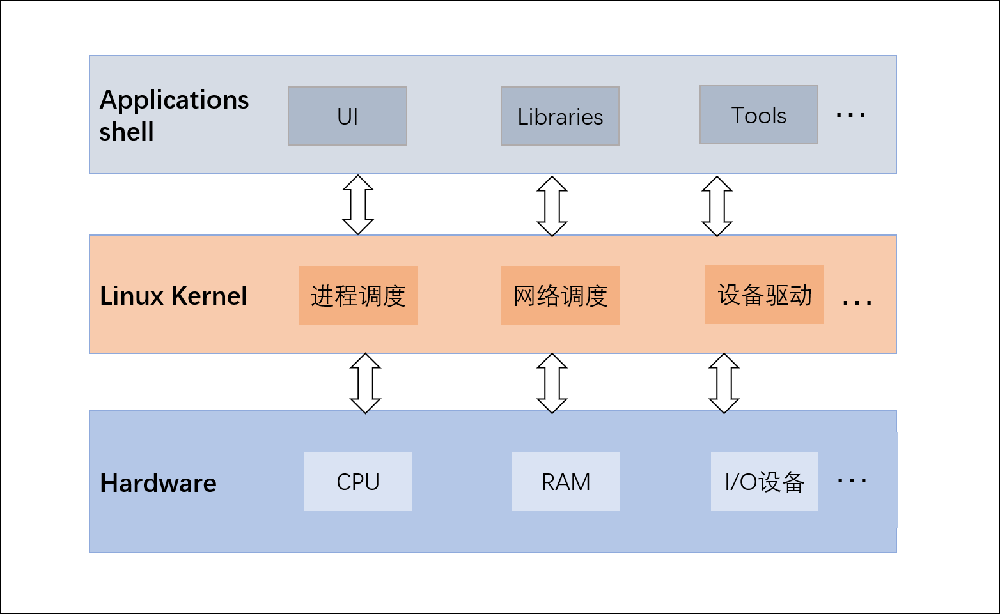
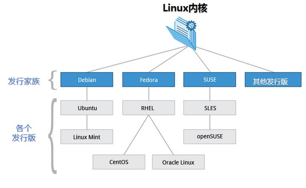
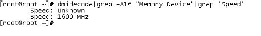
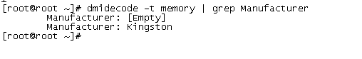

Linux系统主要包括3层， 硬件（RAM、CPU、I/O设备等）、 Linux 内核和 用户进程。
Linux 内核最初由芬兰黑客 Linus Torvalds 开发，Linux内核是Linux操作系统的重要组成部分，是操作系统的核心，是系统硬件和进程之间的接口。内核提供内存管理、进程管理、设备驱动和各种系统调用。

Linux内核版本
Linux各个内核版本可以在https://www.kernel.org/ 上下载，一些社区组织或厂商将Linux内核与各种软件和文档包装起来，并提供系统安装界面和系统配置、设定与管理工具，就构成了 Linux 的发行版本。Linux有多个发行版本，常见的Linux系统有Centos和Ubuntu。

查看系统版本
1 | cat /proc/version |
1 | [root@iZ8vb54310gt89j8qct198Z ~]# cat /proc/version |
4.18.0-147.5.1.el8_1.x86_64 :
- 4：内核主版本号
- 18：内核次版本号，偶数代表稳定版；奇数代表开发版
- 0：内核修订版本号，添加安全补丁，bug修复，新功能或驱动程序等
- 147.5.1：发行版本的补丁版本
- el8_1：使用的内核是 RedHat / CentOS 系列发行版专用内核
- x86_64：x86平台64位CPU
查看centos发行版本：1
2[root@iZ8vb54310gt89j8qct198Z ~]# cat /etc/redhat-release
CentOS Linux release 8.1.1911 (Core)
shell
常见 shell
Shell 是一种脚本编程语言，连接内核和用户。常见的 Shell 有 sh、bash、ksh、csh等。
- Bourne Shell (/usr/bin/sh或/bin/sh)
- Bourne Again Shell (/bin/bash)：兼容 sh
- C Shell (/usr/bin/csh)
- K Shell (/usr/bin/ksh)
- Shell for Root (/sbin/sh)
cat /etc/shells 命令查看系统可用shell:1
2
3
4
5
6[root@client ~]# cat /etc/shells
/bin/sh
/bin/bash
/usr/bin/sh
/usr/bin/bash
[root@client ~]#
运行 shell
- 使脚本具有执行权限
1
2chmod +x ./test.sh
chmod 777 ./test.sh - 执行脚本
1
2./test.sh # 执行脚本
/bin/sh test.sh查看Linux系统信息
查看系统位数
getconf LONG_BITfile /bin/ls
1 | [root@iZ8vb54310gt89j8qct198Z ~]# getconf LONG_BIT |
查看内存信息
Linux 查看内存支持的最大内存容量1
2$ dmidecode|grep -P 'Maximum\s+Capacity'
Maximum Capacity: 8 GB
查看槽位上内存的速率，没插就是unknown。1
dmidecode|grep -A16 "Memory Device"|grep 'Speed'

查看内存条厂家1
dmidecode -t memory | grep Manufacturer

查看内存信息（显示插槽个数和每个插槽里内存条的大小）1
2$ dmidecode -t memory | grep Size
Size: 8192 MB
查看内存使用情况：
1 | $free -h |
查看CPU信息
1 | # CPU型号 |
服务管理
CentOS 7之后使用Systemd管理守护进程，使用systemctl命令。
可使用systemctl --help 查看使用方法，比如查看所有已启动的服务
1 | $ systemctl list-units --type=service |
Linux软件包管理
Linux软件安装可以直接通过源码编译安装，一般源码包都打包成tar.gz压缩格式。源码包安装比较麻烦，容易出错，也可以使用包管理来软件包的管理，包管理工具是对软件工具的安装、卸载及其他管理， 常见的两类软件包管理工具是RPM 和 DPKG，RPM是Red Hat软件包管理器，DPKG的是Debian的Linux系列基本的包管理系统。
源码编译安装
源码编译安装步骤：
- 下载安装文件
- 解压
1
tar -xvzf xxx.tar.gz
- 检查编译
进入解压文件内检查通过后，将生成用于编译的MakeFile文件。1
./configure
- 编译
1
make
- 安装
1
make install
安装完毕，应清除编译过程中产生的临时文件和配置过程中产生的文件。1
2make clean
make distclean
如果要卸载，则执行1
make uninstall
RPM
RPM 全称为 Redhat Package Manager，最早由 Red Hat 公司制定实施，rpm包文件通常以.rpm结尾。
RPM包安装
下载rpm包后安装：
安装 RPM 包1
rpm -ivh package.rpm
升级 RPM 包1
rpm -Uvh package.rpm
卸载 RPM 包1
rpm -ev package
rpm命令其它用法
查看是否安装了某个软件：
1 | [root@Client ~]# rpm -qa | grep wireshark |
查询某个命令属于哪个软件：
1 | [root@Client ~]# which scp |
yum
rpm无法解决软件包与软件包之间的依赖问题，可以使用yum工具进行在线安装，yum（Yellowdog update Modifier）是RPM前端工具，操作对象为rpm包。由于网络问题，可以设置yum国内镜像源，也可以配置本地源。下面介绍yum安装方法：
搜索可用软件包：1
yum search all 软件关键字
搜索已安装的软件：1
yum list installed | grep 软件关键字
安装1
2yum install package-name
yum -y install package-name #接受所有互动问答
卸载1
2yum remove package-name
yum -y remove package-name
DPKG
DPKG全称为 Debian Package，功能与 RPM 相似，包文件通常以 .deb 扩展名结尾。Ubuntu系统使用此包管理工具。
DPKG 命令安装
安装 DEB 包1
dpkg -i package.deb
升级 DEB 包1
dpkg -i package.deb ( 和安装命令相同）
卸载 DEB 包1
2dpkg -r package.deb # 不卸载配置文件
dpkg -P package.deb # 卸载配置文件
apt
apt 全称 Advanced Packaging Tools，DPKG 前端工具， apt 的主要包管理工具为apt-get，实现功能和yum类似。
搜索可用软件包1
apt-cache search 软件关键字
安装1
apt-get install package-name
下载指定软件的源文件1
apt-get source package-name
更新1
2
3apt-get upgrade # 更新软件
apt-get update # 更新软件列表
apt-get dist-upgrade # 更新所有软件
卸载1
2
apt-get remove package-name
查看历史命令history
在Linux命令窗口可以查看执行过的历史命令，可以通过上/下方向键（或者Ctrl+ p / Ctrl+ n）显示相对于当前命令的上一条或下一条历史记录。或者通过Ctrl+ r 来搜索历史命令。
还有一种更为直观的方法是使用history命令，可以显示多个记录，默认情况下，历史命令存放在 ~/.bash_history 文件里面，也可以在/etc/bashrc中设置历史命令存放路径，添加：export HISTFILE=存放路径
history命令格式如下：1
history [-c] [-d offset] [n]
- -c：清空历史命令
- -d offset：删除历史命令中第offset个命令
- n：显示最近的n条历史命令
显示最近的5个命令：1
2
3
4
5
6
7[root@server ~]# history 5
996 cat /etc/bashrc
997 vim /etc/bashrc
998 history --help
999 echo $HISTSIZE
1000 history 5
[root@server ~]#
Linux 文件句柄
由于UNIX/Linux系统中的资源都是以文件的形式存在的，可以限制用户进程可使用的系统资源数量，比如一个进程可以打开的文件数，用户可以创建多大的文件，以及进程可以使用多少内存。如果Linux在进行大量并发操作的时候，可能会报 “Too many open files” 错误，这是因为并发操作的文件数超过了限制，可以使用ulimit命令查看：1
2
3
4
5
6
7
8
9
10
11
12
13
14
15
16
17$ ulimit -a
core file size (blocks, -c) 0
data seg size (kbytes, -d) unlimited
scheduling priority (-e) 0
file size (blocks, -f) unlimited
pending signals (-i) 7144
max locked memory (kbytes, -l) 64
max memory size (kbytes, -m) unlimited
open files (-n) 1024
pipe size (512 bytes, -p) 8
POSIX message queues (bytes, -q) 819200
real-time priority (-r) 0
stack size (kbytes, -s) 8192
cpu time (seconds, -t) unlimited
max user processes (-u) 7144
virtual memory (kbytes, -v) unlimited
file locks (-x) unlimited
open files 的最大限制为1024，可以使用ulimit命令进行修改：1
ulimit –n 10000
这个命令不能保证永久生效，系统重启后会恢复原来的默认值。为了让ulimit在重启过程中持续存在，需要修改配置文件/etc/security/limits.conf：1
2
3
4
5
6
7
8
9
10#<domain> <type> <item> <value>
#
#* soft core 0
#* hard rss 10000
#@student hard nproc 20
#@faculty soft nproc 20
#@faculty hard nproc 50
#ftp hard nproc 0
#@student - maxlogins 4
type可以设置为soft和hard：
- soft：软件限制，用于警告
- hard：硬件限制，设置实际的默认值
item选项包括：
- core ：core文件大小 (KB)
- data ：最大的数据大小 (KB)
- fsize ：最大文件大小 (KB)
- memlock ：最大锁定内存空间 (KB)
- nofile ：打开文件的最大数量
- rss ：最大Resident Set大小 (KB)
- stack ：堆栈大小 (KB)
- cpu ：最大CPU time (MIN)
- nproc ：最大进程数
- as ：最大地址空间 (KB)
- maxlogins ：此用户的最大登录数
- maxsyslogins ：系统的最大登录数
- priority ：运行用户进程的优先级
- locks ：用户最大文件锁定数
- sigpending ：最大被挂起/阻塞 (pending) 的信号数
- msgqueue ：POSIX消息队列使用的最大内存 (bytes)
- nice ：最大允许的 nice 优先级: [-20, 19]
- rtprio ：最大realtime优先级
打开文件的最大数量设置方法如下：
编辑配置文件 /etc/security/limits.conf 加入如下配置：
1 | * soft nofile 10000 |
或者：
1 | * - nofile 2000 |
保存退出。
本文标题:Linux系统介绍：内核、shell及软件包管理
文章作者:hiyo
文章链接:https://hiyongz.github.io/posts/linux-kernel-and-shell-introduce/
许可协议:本博客文章除特别声明外，均采用CC BY-NC-ND 4.0 许可协议。转载请保留原文链接及作者。